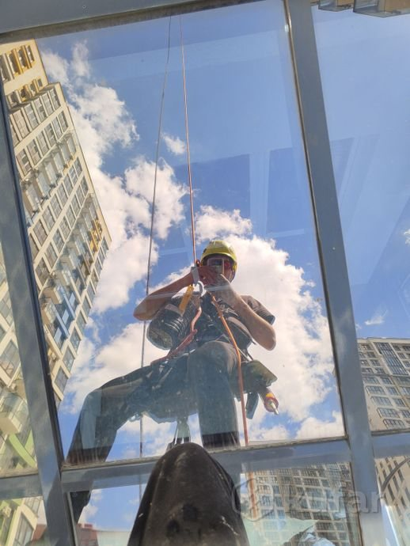

Фасадные работы на высоте: метод промышленного альпинизма
Покраска безвоздушным аппаратом высокого давления, утепление фасада пенопластом с устройством фасадного пирога, штукатурка, герметизация швов — без лесов, подъемников и лишних затрат.
Что делаем на фасаде
Полный цикл фасадных работ методом промышленного альпинизма — от утепления до покраски и мелких высотных задач.
Покраска фасада АВД
Безвоздушный аппарат высокого давления: равномерный слой без полос, кистей и потёков — на любой высоте.
Утепление фасада
Утепление пенопластом с устройством фасадного пирога: клей, плиты, армирующий слой — под штукатурку.
Штукатурка фасада
Штукатурка, декоративная штукатурка, перетирка фасада — ровная плоскость и финишная текстура.
Герметизация швов
Герметизация фасадных швов и стыков: устраняем протечки и продувание — причина, не следствие.
Ремонт и восстановление
Ремонт фасадов, фасадные дефекты, восстановление фасада, отделка фасада — от локальных до полных циклов.
Мелкие высотные работы
Установка отливов, громоотвода, рекламные баннеры и многое другое — то, что не достаёт «с земли».

Почему промальп, а не леса
| Не нужны леса и автовышки | ниже затраты |
| Не перекрывается тротуар | жители не страдают |
| Любая высота | от 2 до 25+ этажей |
| Скорость | спустились — работаем |
Страховка — всегда. Работа на верёвках ведётся по страховочным системам: безопасность альпиниста и сохранность фасада — часть технологии, а не опция.
Фасад ждёт ремонта? Спускаемся и считаем
Расскажите про объект: дом, высота, что нужно сделать. Приедем, обследуем фасад, дадим смету — до начала работ.